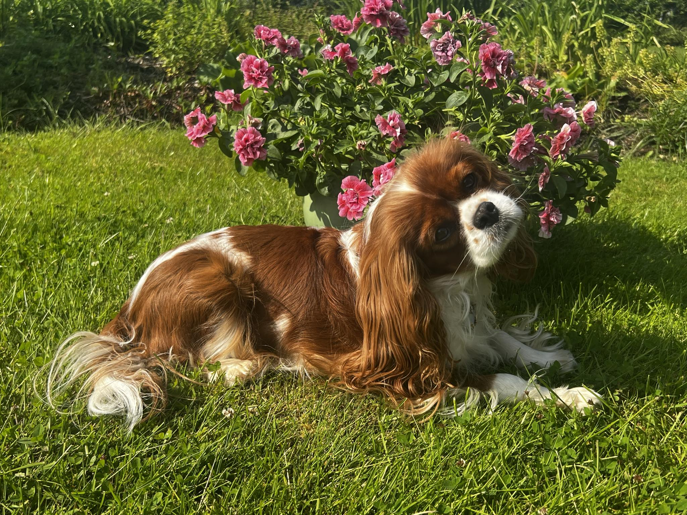

O nás
Jsme malá chovatelská stanice zaměřující se na kavalíry. Máme pouze jednu fenečku Maryen Magic od Jihlavské brány, která je "psí zakladatelkou" našeho chovu. Zda-li se jednou naše stanice rozšíří je zatím ve hvězdách, ale rozhodně už teď máme jasno v tom, že naši pejsci jsou pro nás především parťáky, nikoliv "strojem na peníze".
Maryen Magic Od Jihlavské brány
Díky naší fenečce Maryen neboli Myšce si celá naše rodina tuto rasu ihned zamilovala. Myška je povahově opravdu jedinečná, proto jsme se rozhodli pro uchovnění, jelikož jsme dle zdravotních testů měli jistotu, že je naprosto zdravá. Myšku můžete potkat i v mém masérském salónu, kde mne každý den doprovází.
Každou klientku přivítá a po dobu procedury spinká ve vedlejší místnosti. Je neuvěřitelně empatická a nejednou byla klientkám s vážnými problémy milou společnici a utěšovatelkou. Ve chvíli, kdy nejsme v práci, nás nejčastěji potkáte venku v přírodě na dlouhých procházkách, nebo na agility trénincích, které nás obě moc baví.
VRH A
Vrh A je tu! 19.7.2024 se nám narodila 4 krásná blenheim štěňátka. Kluci jsou v silné převaze, jelikož se narodili 3 a pouze 1 holčička. Všichni prckové krásně prospívají.
HLEDÁME NOVÉ DOMOVY
Nabízíme možnost rezervace. U všech štěňátek máme podmínku 1 návštěvy ještě před odjezdem do nového domova. Pro štěňátka si přejeme rodiny, kde bude součástí rodiny. Kavalíři jsou aktivní pejsci, kteří rádi tráví čas se svými páníčky, ale také ve společnosti dalších pejsků. Více s Vámi rádi probereme na tel. 731 489 257.
Matka šťěnátek: Maryen Magic od Jihlavské brány
Otec štěňátek: Xerxes Dream Bonimo
Annie Solari z Tisovských skal - REZERVOVANÁ

Apollo Solari z Tisovských skal
Arnold Solari z Tisovských skal
Amigo Solari z Tisovských skal
Chovatelský servis
Na chovatelském servisu si velmi zakládáme. Novým majitelům našich štěňátek jsme plně k dispozici. Rádi poradí s výběrem krmení, potřeb pro pejsky, ale i s výchovou a výcvikem. Výcvik má v naší rodině i chovatelské stanici na starosti Dája.
Adresa
Pavla Pulcová Solaříková
Tisá 464, Tisá, 403 36
Telefon
+420 731 489 257
Plemeno Cavalier

Kavalír king Charles španěl je populární společenské plemeno historicky oblíbené u šlechty již po staletí. Historie plemene sahá do doby krále Karla I. a II., Marie Stuartovny a můžete je spatřit např. I na obrazech malířů Rubense, Tiziana či van Dicka.
Kavalír je malé plemeno, vyrovnané a přátelské, které miluje neustálý kontakt s člověkem. Jsou neuvěřitelně přizpůsobiví a zároveň aktivní. Zvládnou celodenní výlet do přírody a také lenošení na pohovce. Přistupovat k nim je důležité s citem a vychovávat skrz pozitivní motivaci, rozhodně ne tvrdou rukou.
Proč si pořídit Kavalíra?
- Kavalír je inteligentní a hravý. Rychle se učí, baví ho agility, dogdancing a další psí sporty,
- svojí milou povahou je vhodný do rodiny k dětem a dalším pejskům,
- je velmi přizpůsobivý (jak pro aktivní sportovní rodinu, tak i pro klidnější lenošení na gauči),
- velice dobře vychází s cizími pejsky.
Proč si nepořizovat Kavalíra?
- nesnáší samotu, jsou tak vhodní pro aktivní důchodce, do rodin, kde je často někdo doma a pro ty, co mohou mít pejska v práci nebo pracují doma na homeoffice,
- rádi loudí jídlo a mají sklon k obezitě,
- srst potřebuje péči (kartáčování, pravidelné koupání),
- na procházkách je třeba pravidelně a důsledně trénovat přivolání, kavalíři mají sklony k lovu,
- dědičná onemocnění především očí a srdce.
Vzhled kavalíra
Kavalir King Charles španiel patří mezi malá plemena. Váha se pohybuje mezi 5 – 8 kg. Srst je dlouhá, hedvábná, rovná i lehce zvlněná. Povolené barevné varianty jsou: black and tan, ruby, blenheim a tricolor. Hlava odpovídá tělu, oči jsou tmavé a kulaté. Uši jsou dlouhé, vysoko posazené a svěšené. (při jídle doporučuji dávat čelenku či gumičku na uši).